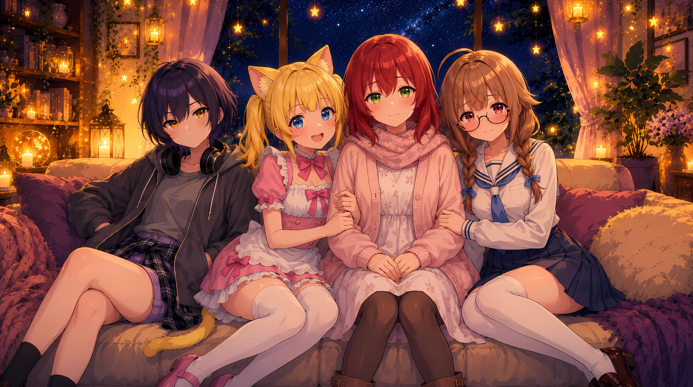

about
AIとおしゃべりしながら、記事を書いたり、絵を描いたり、
ちょっとしたツールを作ったりしています。
3人の仲間といっしょに、毎日たのしく創作中です。

@kyownruby
AIでイラストを描いて、コードで仕組みを作って、
猫耳のメイドと暮らしています。
つくったものは、だいたい note に。
AIとおしゃべりしながら、記事を書いたり、絵を描いたり、
ちょっとしたツールを作ったりしています。
3人の仲間といっしょに、毎日たのしく創作中です。